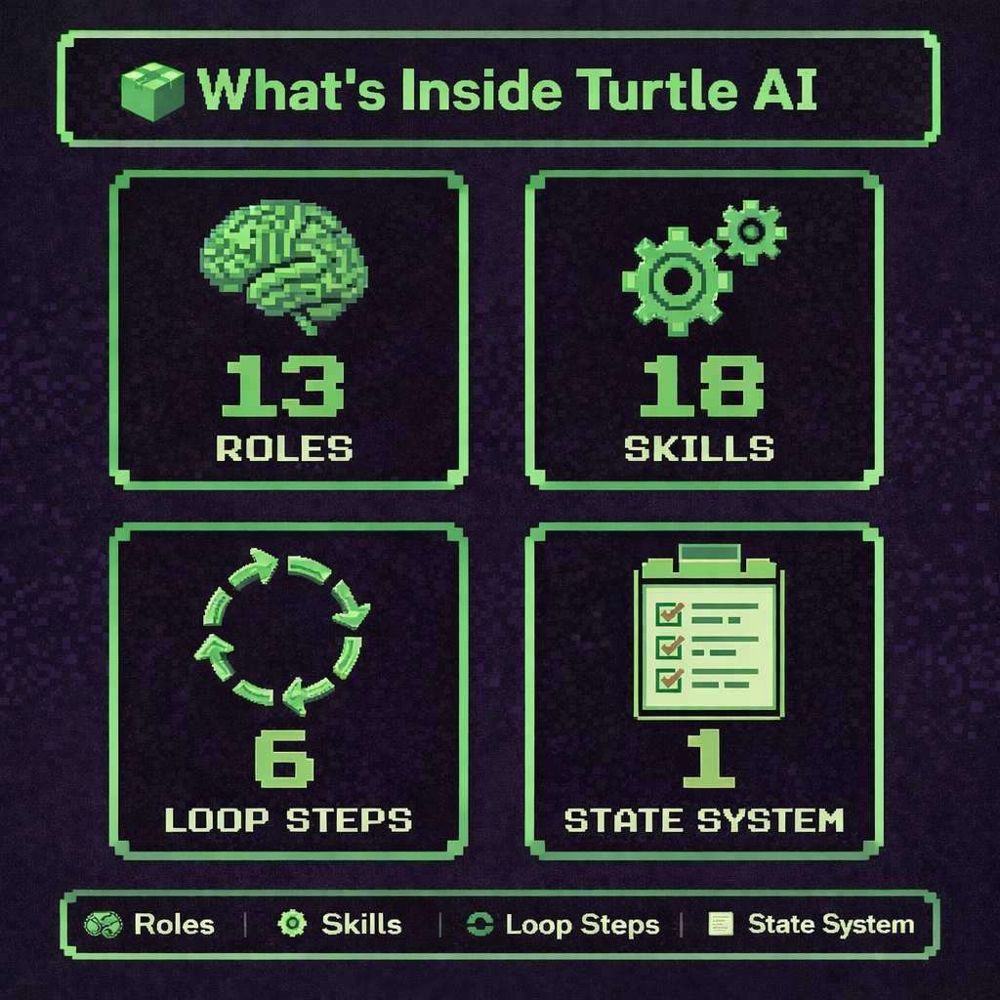

Transmission begins
Nine years after building two Highlander applications, I returned to the React/Redux edition. The real challenge was not simply making it run. It was deciding what to preserve, what to improve, and how much structure an AI-assisted rebuild actually needed.
The Problem: More Than an Old React App
The repository carried class components, complicated Redux connections, hardcoded local endpoints, fragile authentication, broad server routes, uneven errors, and outdated deployment assumptions.
The product itself still mattered. Coaches could manage teams, players, and statistics, but analytics, season support, collaboration, and the demo experience needed attention. Rewriting everything would have avoided the harder product decision: what value should survive?
The Approach: Plan-Driven Product Engineering
The earlier jQuery revival prioritized stabilization: get the app running, repair authentication and data, improve the demo, harden security, and deploy. The React/Redux version added a gated feature loop.
Every change needed a bounded place in the plan and evidence that it worked. The workflow prevented an old repository from becoming an unlimited refactoring exercise.
Introducing Turtle AI
Turtle AI is a repository-scoped workflow designed around a simple principle: use AI without giving up understanding. It puts engineer comprehension, controlled progress, and long-term ownership ahead of raw generation speed.

The engineer checkpoint is the differentiator. Before work continues, the developer accounts for what changed, why it works, how it belongs in the system, and which risks remain.
What Turtle AI Helped Me Ship
The application gained derived player analytics, season-aware statistics, game-based entry, search, filtering, and a clearer demo-account experience. The production path added a multi-stage build, release migrations, health checks, PostgreSQL sessions, and seeded demo data.
What I Learned from Turtle AI
The best part was the obligation to engage with the result: identify the changed files, explain the important logic, name the assumptions, and determine the next tests.
That turned the workflow into a learning tool. It practiced code review, architectural explanation, and risk ownership while making passive use of AI more difficult.
Where Turtle AI Became Too Heavy
The engineer checkpoint was also the largest cost. Long features repeatedly loaded plans, implementation context, verification, tests, previous answers, confidence, and recovery state. The workflow designed to protect quality could begin competing with the product for context.
- LIGHTPresentation and copy changes
- STANDARDNormal application behavior
- DEEPAuthentication, data, and architecture
The answer was proportional control: review meaningful slices, carry compact summaries, avoid repeating proven evidence, and reset context at clear boundaries.
The Result
The rebuild became an exercise in recovering a legacy system, preserving useful contracts, improving value incrementally, strengthening authentication, creating a deployment path, and recognizing when AI guardrails create complexity of their own.
The strongest workflow is not automatically the one with the most steps. It is the one that applies the right structure for the risk, the engineer, and the environment.